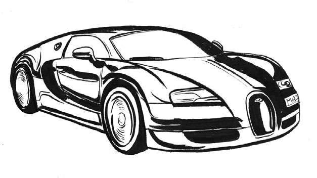
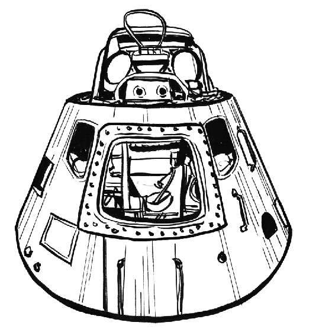

信息传递的速度远比人类奔跑的速度要快得多，当然人类奔跑的速度也很快。目前最快的跑步纪录属于牙买加运动员尤塞恩·博尔特（Usain Bolt），他在2009年100米短跑比赛中创造了27.79英里/小时（44.72千米/小时）的世界纪录。博尔特仅用9.58秒就完成了100米短跑比赛，打破了自己之前创造的世界纪录9.69秒。尽管如此，人类的速度仍比其他动物慢得多。猎豹是世界上奔跑速度最快的动物。2012年，一头名叫萨拉的猎豹创造了新的世界纪录，用5.59秒跑完了100米，时速高达61英里（98千米）。可以这么说，就连一只家猫也能跑过尤塞恩·博尔特，家猫的最快速度为30英里/小时（48千米/小时）。
加快速度，减少从A地到B地所用时间一直是人类努力的方向。接下来我们将介绍几种人类发明的高速交通方式，思考我们将来如何才能以更快的速度旅行。
莱特兄弟（Wright Brothers）于1903年驾驶发动机驱动的飞机首次飞行成功，速度达到6.8英里/小时（10.9千米/小时）。到1905年，他们的最高飞行速度可达37.85英里/小时（60.23千米/小时）。今天载人飞机的飞行速度纪录由SR—71黑鸟式侦察机于1976年7月创造，为2 193.2英里/小时（3 529.6千米/小时）。
目前市场上速度最快的汽车是布加迪威龙，它可在2.4秒内从0加速到60英里/小时，最高速度可达267英里/小时（431.07千米/小时）。你只需花240万美元就可以买一辆布加迪，只可惜世界上还没有公路可以让你合法开到如此高的速度。意大利的最高合法限速只有150千米/小时（波兰、保加利亚和阿拉伯联合酋长国只有140千米/小时）。德国高速公路上没有限速，但建议是130千米/小时。开着布加迪时速超过300千米/小时似乎会很难停下来。
再看看这些年来我们的速度加快了多少。德国人卡尔·本茨（Karl Benz，梅赛德斯·奔驰创始人）设计的第一辆汽油发动机商用汽车于1888年上路，最高速度只有16千米/小时。目前世界上最快的火车是中国的CRH380A，最高速度可达302英里/小时（486千米/小时），是陆地上最快的合法交通工具。

音速 [1] 为343.2米/秒（约1 236千米/小时）。“二战”期间首次发现了音障，当时飞机遇到了压缩效应——被压缩的空气阻止飞机进一步加速的空气动力效应。当设计不当的飞机速度达到音速时，会产生剧烈震动或者“音爆”，因此人们曾以为音速是提升飞行速度不可逾越的障碍，故称音障。经过对飞机外形设计的不断改进，飞机对空气动力的应用不断增强，从而突破了音障，提高了速度。美国人查克·耶格尔（Chuck Yeager）于1947年开XP—86佩刀式战斗机首次正式突破音障。
一年后，陆地上首次出现了可突破音障的运载工具。1948年，一辆无人火箭滑车时速达到1 019英里（1 640千米）后从滑轨跌落。1997年，英国人安迪·格林（Andy Green）驾驶首辆超音速载人汽车推进号（Thrust SSC），速度达到763英里/小时（1 228千米/小时）。
2012年10月，奥地利人菲利克斯·鲍姆加特（Felix Baumgarter）成为第一个超越音速的跳伞运动员，最高速度达到833.9英里/小时（1 342千米/小时）。为达到此速度，他从飘浮在美国新墨西哥州上空24英里（39 045米，远超平流层）高的气球跳下，此举同时打破了自由落体的最高纪录。我们来做个对比，普通波音747的最高飞行高度是13 000米，珠穆朗玛峰的顶峰也只有8 844米。鲍姆加特降落到地球只花了9分多钟，只有最后2 526米因降落伞才放缓降落速度。
1969年5月，阿波罗10号航天火箭开始执行发射任务，测试登月所需的整个流程，但未实际降落月球表面。阿波罗11号于同年7月成功登月。此次任务中，阿波罗10号创造了载人航天器的最高飞行速度纪录——24 791英里/小时（39 897千米/小时）。

阿波罗10号
2004年，美国航空航天局（NASA）测试了一架高超音速飞机，其使用火箭助推器发射，最终达到时速7 000英里（10 461千米）。如果该项技术能够成功应用于普通民航，人类的旅行方式和对时间、距离的体验将被彻底改变。
☆飞行车：在科幻电影中，我们经常可以看到时髦的流线型汽车飞越摩天大楼。但是我们未来驾驶的飞行车更倾向于使用超轻型飞机技术，这种飞机看起来像装有可拆卸翼的双人封闭滑翔机。借助这种飞行器，我们可以轻松飞往附近的国家。配置节能型引擎、飞行速度可达150英里/小时（241千米/小时）、无须绕道等一系列特点，将会让飞行车成为广受青睐的环保型出行选项。这种飞行车的价格也不会太高，大概相当于一辆高端家用汽车的成本。
☆废物动力汽车：电影《回到未来》（Back to the Future ）拍摄于1985年，在结尾时，我们看到穿着未来服装的“博士”把废物装进了时光机的汽油转化器。1985年，这个想法貌似非常前卫，而如今已变为现实。变废为宝的工厂已经在欧洲遍地开花，正在把不可回收的垃圾转化为电能。转化的电能很快就可供给机动车辆。虽然现在上路的电动汽车还很少，但如果未来氢动力汽车没有迅速崛起，这种电动汽车将成为主流。这些未来的汽车不仅更环保，而且更安全。交通甚至可能由卫星技术控制，汽车之间可以互相通信，交通堵塞可能变成传说。
☆磁悬浮列车：高架铁轨和单轨铁路如今都已经比较常见。但平均速度达到418千米/小时的磁悬浮列车比较少见。第一条“磁悬浮”列车线已经在上海市中心和浦东机场之间运行。这种新的铁路运输方式成本比较昂贵，需要铺设新的轨道。不过，其他铁路技术也在奋起直追，标准轨道上的速度几乎也能赶上磁悬浮列车。我们很快就能以更快的速度在城市之间穿梭，随着烦琐的检票过程逐步简化，有时坐火车甚至可能比坐飞机还快。
☆慢旅行：前文一直在强调加速，而环保人士则在敦促我们慢下来，尤其反对廉价航空。在很多绿色运动人士看来，旅行不只是从一个地方跑到另一个地方，而是体验整个旅程，所以最好选择更为环保的出行方式，比如火车或轮船。他们鼓励我们停下来，问问自己到底是真的在旅行，还是只是在赶路。像珍视目的地一样珍视旅途中的一切，真真正正去感受每一秒的流逝，这将是一种全然不同的时间概念。但如我们所知，通常意义上的“实时”并不真的是实际时间，它背后的速度要比人快得多，而且似乎没有要慢下来的迹象。